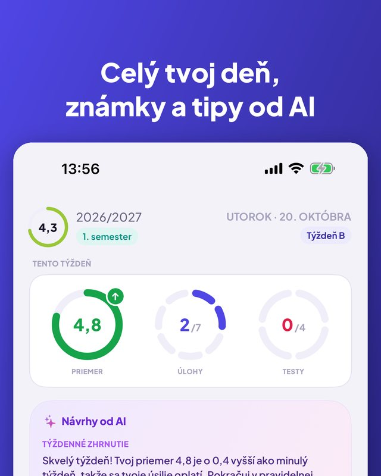
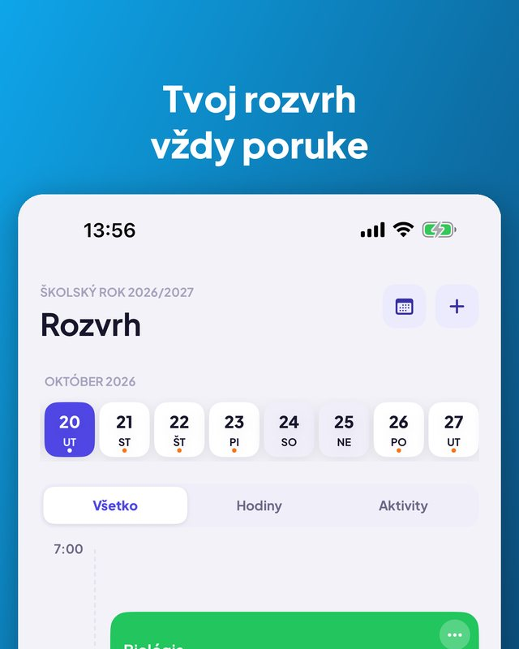
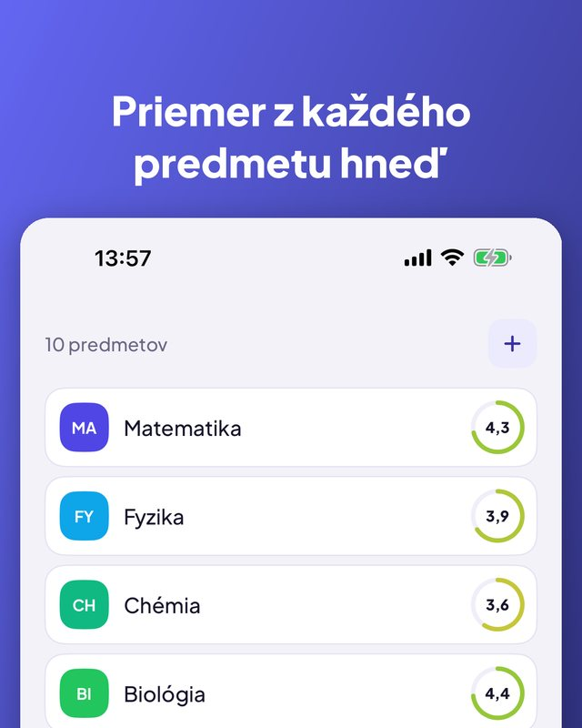
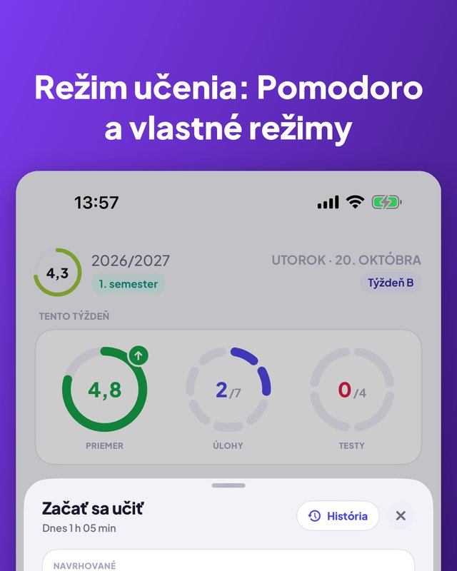
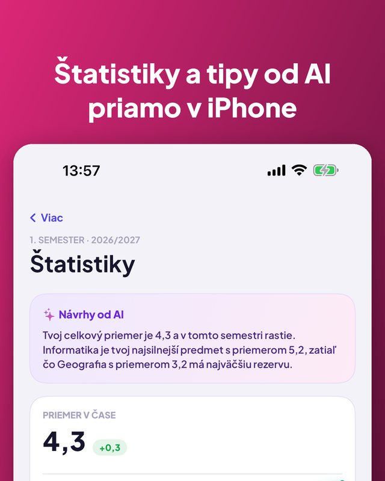

Kajet je plánovač pre školu a univerzitu. Celý deň na prvý pohľad, známky s priemerom, úlohy a testy s pripomienkami a časovač učenia s Pomodoro. Bez účtu, bez reklám.


Denné a týždenné zobrazenie, učebne, časy.
Zrušená, suplovaná alebo v inej učebni na jeden deň.
Šport, hudba, doučovanie, s upozornením, kedy vyraziť.
Ďalšia hodina na domovskej aj uzamknutej obrazovke.
Vlastné kategórie, komentáre a opravy.
Vývoj v čase, najlepší predmet, čo ťa ťahá nadol.
Kredity, konečné známky, priemer vážený ECTS.
Nastav hranicu a uvidíš, aké známky ti chýbajú.
Dnes, zajtra, tento týždeň, neskôr. Odškrtneš jedným klepnutím.
Deň alebo tri dni vopred, večer alebo kedy chceš.
Odpočet alebo Pomodoro, prepojené s testom.
7 dní, mesiac alebo semester, podľa predmetov.
Týždenné zhrnutie a kedy sa učiť. Len vo tvojom iPhone.
Opýtaj sa na ďalšiu hodinu alebo hlasom pridaj známku.
Nový začneš skopírovaním predchádzajúceho.
Riadi sa jazykom tvojho iPhonu.



Aplikácia, widget, Siri aj Skratky sú v 13 jazykoch. Kajet sa riadi jazykom tvojho iPhonu.
Bez účtu, bez reklám a tvoje dáta ostávajú u teba.
Vytvorené s ohľadom na poľský školský a univerzitný systém (známky 1–6, vysokoškolská stupnica 2,0–5,0, ECTS), ale použiteľné kdekoľvek. Pre iPhone s iOS 17 alebo novším; tipy od AI vyžadujú iOS 26 a Apple Intelligence.